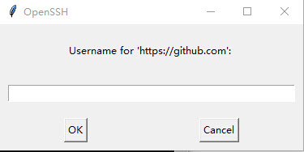

内容提要
本文详细介绍如何使用Hexo搭建博客并部署到github。文章参考了网上的文章，写下此文作为一个知识备份。
Hexo是一个快速简洁的博客框架。它使用node.js来进行页面渲染，并且支持当下最流向的Markdown标记语言。
GitHub是一个分布式版本控制系统，具体概念网上看下教程啦~~。
工具安装
- Windows操作系统。
- git。 点击官网下载最新版本即可，如果官网无法下载你可以从以下的百度云盘下载 百度云下载。
- Node.js。点击node.js官网下载最新版本即可，如果官网无法下载可以从以下的百度云盘下载 百度云下载
Hexo安装
工具安装完成后，在任意位置点击鼠标右键，选择Git Bash Here,在弹出的窗口中输入命令：
创建Hexo文件夹
安装完成后，在任意目录创建文件夹Hexo(如F:\Hexo),在此文件夹内点击鼠标右键选择Git Base Here,输入以下命令进行初始化。
初始化完成后，Hexo文件夹下会建立苏需要的所有文件。
安装依赖包
初始化完后，继续执行以下命令安装Hexo依赖包。
启动测试
经过以上步骤，我们已经成功的搭建了本地Hexo博客，在Hexo文件夹下（F:\Hexo）中点击鼠标右键选择Git Base Here,依次输入以下命令。
启动成功后，我们可以在浏览器中输入http://localhost:4000来进行访问测试。
注册Github账号
登录Github官网进行注册。输入账户名，邮箱注册下，邮箱需要验证。
登录创建repository
登录github,点击New repository进行创建，注意名字必须使用与github账号相同名称，如github名称为：nailkong,创建的repository名称应该为nailkong.github.io。
修改配置文件
- 在刚创建的repository中找到https地址（在Clone or download或者Settings中可以找到）。
- 复制上一步的https地址，然后在你的Hexo文件中（本例使用F:\Hexo）中找到配置文件_config.yml并编辑。
- 修改_config.yml中的deploy，其中type设置为git,repository设置为上一步复制的地址，branch设置为master。注意：号都有一个空格，此规则使用于所有的_config.yml配置文件修改。
设置SSH
- 在任意位置鼠标右键选择Git Bash here,输入以下命令，检查SSH是否存在。
- 如果存在需要重新配置的话，请先删除位于C:\Users\你自己的机器用户\.ssh,下的所有文件后继续步骤。
- 输入一下指令后，回车（邮箱就是你注册github时的邮箱地址）。
1
| ssh-keygen -t rsa -C"###@mail.com"
|
- 输入成功过后，会提示你输入passphrase。输入一个你好记的字符串。
- 继续输入以下指令
- 继续输入以下指令
在我实际操作过程中，在此处提示错误“Could not open a connection to your authentication agent”，如果也提示了此错误的话，请先输入以下指令，在执行第6步。
- 以上步骤执行完成后，就可以添加SSH Key到你的github账户了。输入以下指令拷贝Key
1
| clip < ~/.ssh/id_rsa.pub
|
- 登录github里面点击右上角的设置图标，进入Setting后点击左侧菜单的SSH and GPG keys,点击Add SSH Key,输入一个tittle,将上一步复制的key直接粘贴保存就可以了。
- 经过以上步骤SSH已经配置完成，可以输入一下指令测试SSH，其中passphrase为第4步中你输入的字符串。看到提示You’ve successfully authenticated就证明你已经连接成功了。
部署博客到github
在你的hexo文件夹下，鼠标右键git bash here,依次输入以下指令
在弹出的界面依次输入你的github用户名，github密码。部署成功后，你可以在浏览器中输入http://nailkong.github.io来查看你的博客了,注意将nailkong修改为你自己的github用户名。

注意
每次修改本地文件后，需要上传github时，都需要进入定义的Hexo文件夹执行以下命令